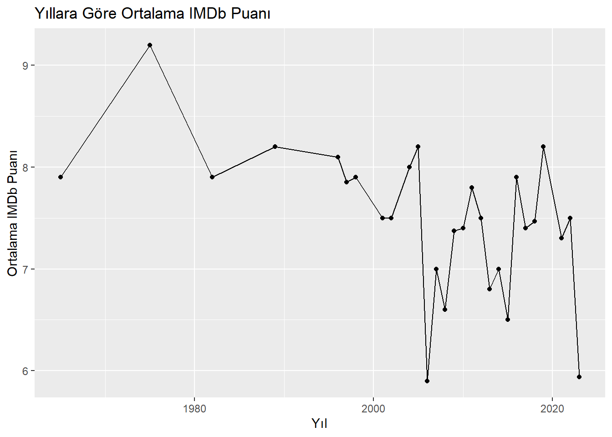
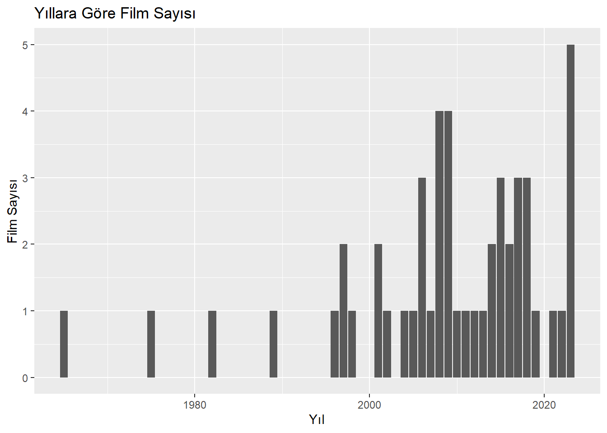
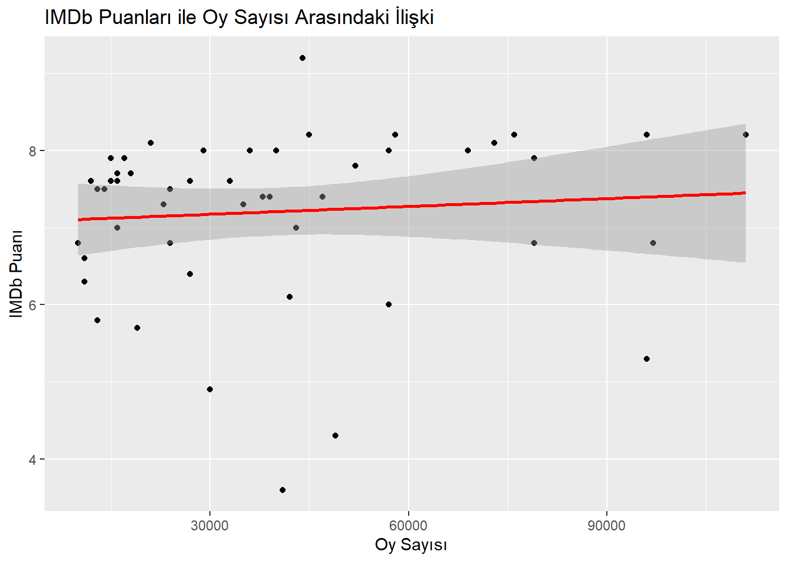
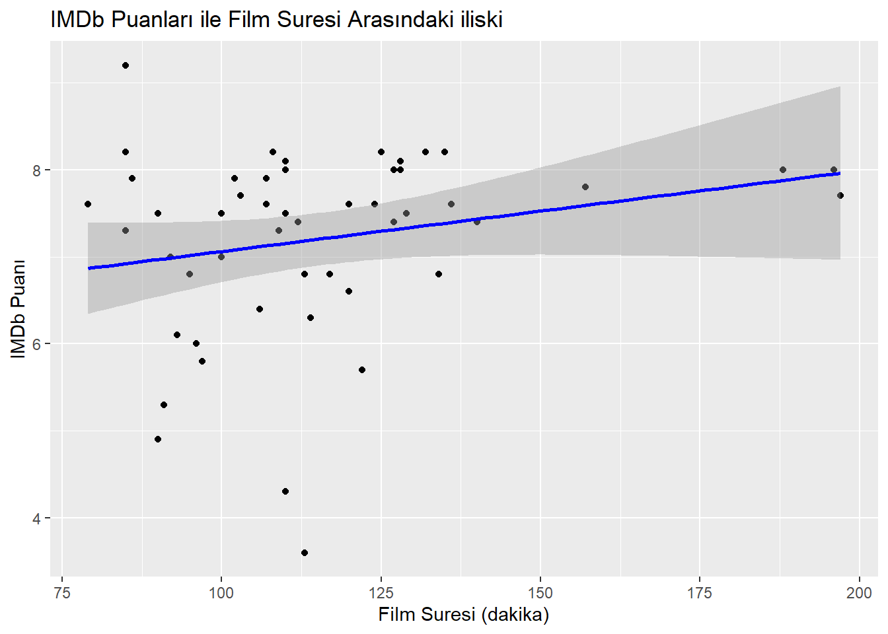

[1] "https://m.imdb.com/search/title/?title_type=feature&release_date=2010-01-01,2023-12-30&num_votes=2500,&country_of_origin=TR&count=250"
[2] "https://m.imdb.com/search/title/?title_type=feature&release_date=,2009-12-31&num_votes=2500,&country_of_origin=TR&count=250" Assignment 2
Assignment 2
1. Using the filters on https://m.imdb.com/search, list all Turkish movies with more
than 2500 reviews, and save the URLs.
https://m.imdb.com/search/title/?title_type=feature&num_votes=2500,&country_of_origin=TR
movies_2010_2023 <- 2010-2023: https://m.imdb.com/search/title/?title_type=feature&release_date=2010-01-01,2023-12-30&num_votes=2500,&country_of_origin=TR&count=250
movies_before_2010 <- - 2009: https://m.imdb.com/search/title/?title_type=feature&release_date=,2009-12-31&num_votes=2500,&country_of_origin=TR&count=250
2. Start web scrapping to create a Data Frame with columns: Title, Year, Duration,
The libraries we will need are:
Code
library(tidyverse)
library(rvest)
library(stringr)
library(stringi)Code
# Tüm veriler için boş bir liste oluştur
all_movies <- list()
for (url in urls) {
data_html <- read_html(url)
# Başlıkları çekme ve temizleme
titles <- data_html |>
html_nodes('.ipc-title__text') |>
html_text() |>
tail(-1)
titles <- head(titles, -1)
# Kodlamayı ve boşlukları düzelt
cleaned_titles <- sapply(titles, simplify_text)
# Benzersiz başlıkları seçmek ve bozuk olanları temizlemek
cleaned_titles <- unique(cleaned_titles) # Tekrarlayan başlıkları kaldır
cleaned_titles <- cleaned_titles[!grepl("\\?\\u", cleaned_titles)] # Bozuk başlıkları kaldır
# Yılları çekme
years <- data_html |>
html_nodes('.sc-300a8231-7.eaXxft.dli-title-metadata-item:nth-child(1)') |>
html_text() |>
str_extract("\\d{4}") |>
as.numeric()
durations <- data_html |>
html_nodes('.sc-300a8231-7.eaXxft.dli-title-metadata-item:nth-child(2)') |>
html_text()
# Süreleri dakikaya çevirme
convert_duration_to_minutes <- function(duration) {
# Saat ve dakika formatını kontrol et
if (grepl("^\\d+h$", duration)) {
# Sadece saat varsa (örn: "2h")
hours <- as.numeric(gsub("h$", "", duration))
return(hours * 60)
} else {
# Saat ve dakika varsa (örn: "2h 7m")
matches <- str_match(duration, "(\\d+)h (\\d+)m")
hours <- as.numeric(matches[, 2])
minutes <- as.numeric(matches[, 3])
return(hours * 60 + minutes)
}
}
# Tüm süreleri dakikaya çevir
durations_in_minutes <- sapply(durations, convert_duration_to_minutes)
# Puanları çekme
ratings <- data_html |>
html_nodes('.ipc-rating-star--rating') |>
html_text() |>
as.numeric()
# Oy sayısını çekme ve temizleme
votes_raw <- data_html |>
html_nodes('.ipc-rating-star--voteCount') |>
html_text()
votes_clean <- sapply(votes_raw, clean_vote)
# Veri çerçevesi oluşturma
movies <- data.frame(
Title = cleaned_titles,
Year = years,
Duration = durations_in_minutes,
Rating = ratings,
Votes = votes_clean
)
# Tüm filmleri birleştir
all_movies <- append(all_movies, list(movies))
}
# Sonuçları birleştir
final_movies <- bind_rows(all_movies)
# Sıra numarasını ve noktayı kaldır
movies$Title <- gsub("^\\d+\\.\\s*", "", movies$Title)
# Gereksiz boşlukları kaldır
movies$Title <- trimws(movies$Title)
# Veri çerçevesini görüntüleme
print(movies) Title Year Duration Rating Votes
1 Babam ve Oglum 2005 108 8.2 96000
2 Gunesi Gordum 2009 120 6.6 11000
3 G.O.R.A. 2004 127 8.0 69000
4 Uzak 2002 110 7.5 24000
5 Masumiyet 1997 110 8.1 21000
6 Eskiya 1996 128 8.1 73000
7 Kader 2006 103 7.7 18000
8 Hababam Sinifi 1975 85 9.2 44000
9 Issiz Adam 2008 113 6.8 24000
10 Barda 2007 92 7.0 16000
11 Ucurtmayi Vurmasinlar 1989 85 8.2 76000
12 D@bbe 2006 110 4.3 49000
13 Yol 1982 107 7.9 15000
14 Vavien 2009 100 7.5 14000
15 Kurtlar Vadisi: Irak 2006 122 5.7 19000
16 Nefes 2009 128 8.0 36000
17 Agir Roman 1997 120 7.6 12000
18 Vizontele 2001 110 8.0 40000
19 Uc Maymun 2008 109 7.3 23000
20 Sevmek Zamani 1965 86 7.9 79000
21 Recep Ivedik 2008 90 4.9 30000
22 Gemide 1998 102 7.9 17000
23 A.R.O.G 2008 127 7.4 47000
24 Yahsi Bati 2009 112 7.4 39000
25 Itiraf 2001 100 7.0 430003. Exploratory Data Analysis
3.a
Code
# IMDb puanına göre sıralama
top_movies <- movies |> arrange(desc(Rating)) |> head(5)
bottom_movies <- movies |> arrange(Rating) |> head(5)
# İlk 5 ve son 5 filmi görüntüle
print(top_movies) Title Year Duration Rating Votes
1 Hababam Sinifi 1975 85 9.2 44000
2 Babam ve Oglum 2005 108 8.2 96000
3 Ucurtmayi Vurmasinlar 1989 85 8.2 76000
4 Masumiyet 1997 110 8.1 21000
5 Eskiya 1996 128 8.1 73000Code
print(bottom_movies) Title Year Duration Rating Votes
1 D@bbe 2006 110 4.3 49000
2 Recep Ivedik 2008 90 4.9 30000
3 Kurtlar Vadisi: Irak 2006 122 5.7 19000
4 Gunesi Gordum 2009 120 6.6 11000
5 Issiz Adam 2008 113 6.8 240003.b
Code
# Favori filmlerinizin sıralamadaki yerini kontrol edin
favorite_movies <- c("Yahsi Bati", "A.R.O.G", "G.O.R.A.") # Örnek favoriler
favorite_movies_data <- movies |> filter(Title %in% favorite_movies)
# Sonucu görüntüle
print(favorite_movies_data) Title Year Duration Rating Votes
1 G.O.R.A. 2004 127 8.0 69000
2 A.R.O.G 2008 127 7.4 47000
3 Yahsi Bati 2009 112 7.4 390003.c
Code
library(ggplot2)
# Yıllara göre ortalama IMDb puanı
yearly_ratings <- movies |>
group_by(Year) |>
summarise(Average_Rating = mean(Rating, na.rm = TRUE), Movie_Count = n())
# Scatter plot
ggplot(yearly_ratings, aes(x = Year, y = Average_Rating)) +
geom_point() +
geom_line() +
labs(title = "Yıllara Göre Ortalama IMDb Puanı", x = "Yıl", y = "Ortalama IMDb Puanı")
Code
# Film sayısının yıllara göre analizi
ggplot(yearly_ratings, aes(x = Year, y = Movie_Count)) +
geom_bar(stat = "identity") +
labs(title = "Yıllara Göre Film Sayısı", x = "Yıl", y = "Film Sayısı")
3.d
Code
# Korelasyon analizi
correlation_votes_ratings <- cor(movies$Votes, movies$Rating, use = "complete.obs")
print(paste("Votes ve Ratings arasındaki korelasyon: ", correlation_votes_ratings))[1] "Votes ve Ratings arasındaki korelasyon: 0.254054459679486"Code
# Scatter plot
ggplot(movies, aes(x = Votes, y = Rating)) +
geom_point() +
geom_smooth(method = "lm", col = "red") +
labs(title = "IMDb Puanları ile Oy Sayısı Arasındaki İlişki", x = "Oy Sayısı", y = "IMDb Puanı")`geom_smooth()` using formula = 'y ~ x'
3.e
Code
# Korelasyon analizi
correlation_duration_ratings <- cor(movies$Duration, movies$Rating, use = "complete.obs")
print(paste("Duration ve Ratings arasındaki korelasyon: ", correlation_duration_ratings))[1] "Duration ve Ratings arasındaki korelasyon: -0.0633030865033471"Code
# Scatter plot
ggplot(movies, aes(x = Duration, y = Rating)) +
geom_point() +
geom_smooth(method = "lm", col = "blue") +
labs(title = "IMDb Puanları ile Film Suresi Arasındaki iliski", x = "Film Suresi (dakika)", y = "IMDb Puanı")`geom_smooth()` using formula = 'y ~ x'
4. Top 1000